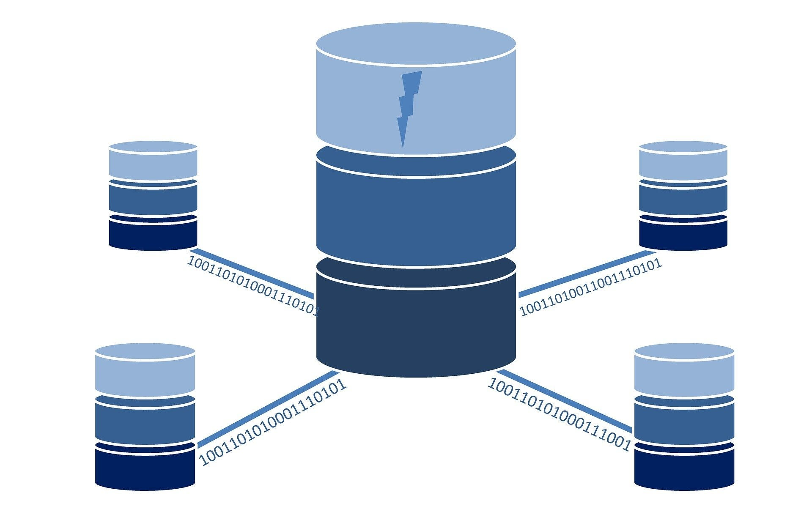

| Adatbázisrendszerek | Webprogramozás alapjai | Webes adatkezelő környezetek |
Adatbázisrendszerek
Oktató: Dr. Bednarik László
Kredit: 5
Tematika
- Az adatbázis-kezelő feladata
- Az adatbázis objektumai
- Adatbázis-kezelő rendszerek
- Az adattáblák kezelése
- Az adattáblák kezelése, kulcs fogalma
- Rekordok felvétele, módosítása, törlések
- Adattábla megjelenése, formázása
- Statisztikai számítások a táblában
- Keresés: automatikus, speciális szűrés űrlap szerint
- Lekérdezések: választó, törlő, frissítő, stb.
- Adattáblák létrehozása és összekapcsolása
- Táblák feltöltése
- Űrlap készítése
- Jelentés készítése

Forrás:
https://analyticstraininghub.com/